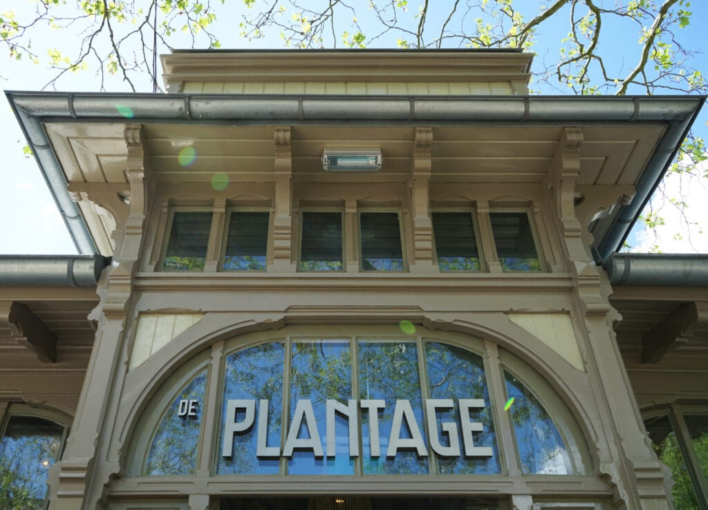
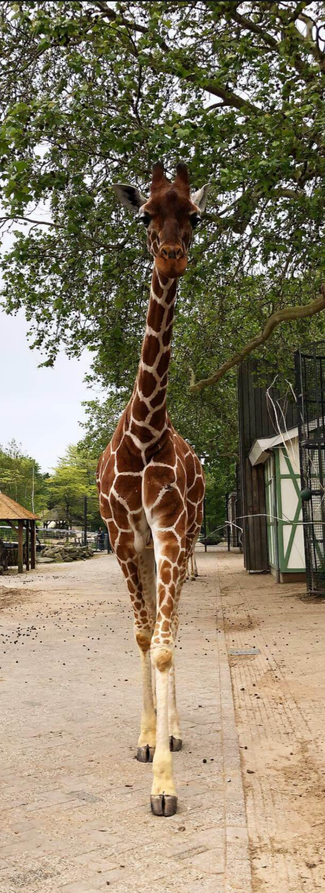
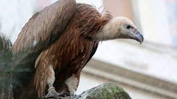
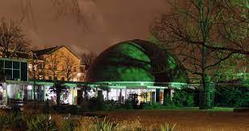
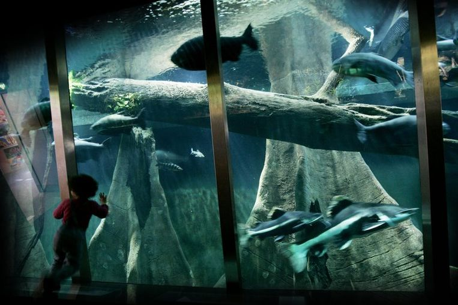

Artis is De dierentuin van Amsterdam en de Oudste dierentuin van Nederland,
filmpje Artis 1930 en bezit ongeveer 900 diersoorten.
Artis ligt in de Plantagebuurt met de ingang aan de Plantage Kerklaan.
Artis is als tuin van het Koninklijk Zoölogisch Genootschap Natura Artis Magistra
de natuur is de leermeesteres van de kunst.
in 1838 opgericht dat zich ten doel gesteld heeft om liefde en zorg voor de natuur te stimuleren.
Het park heeft 27 monumentale gebouwen die grotendeels uit de negentiende eeuw dateren.
In Artis staan meer dan 800 bomen, van ruim 200 verschillende soorten.
74 daarvan staan op de gemeentelijst van monumentale bomen.
Sommige stammen nog van voor de oprichting van Artis.

De zomereik Heijmanseik naast het buitenverblijf van de chimpansees
is bijvoorbeeld naar schatting ruim 250 jaar oud. Er zijn zeldzame bomen uit de hele wereld te zien, die soms in de natuur
nauwelijks nog voorkomen.
Maar er groeit ook een zaailing van de Anne Frankboom.
Artis ontvangt jaarlijks meer dan een miljoen bezoekers 1,41 miljoen in 2019.
Artis noemt zich graag Het oudste stadspark van Amsterdam.
De oorspronkelijke gridstructuur van de Plantage, een 17e-eeuwse stadsuitbreiding
is nog steeds bepalend voor de structuur,
maar nauwelijks te zien omdat die is omgevormd in de stijl van een Engelse tuin.
In het verleden had de Amsterdamse dierentuin enkele zeer bijzondere
soorten in de collectie zoals de inmiddels uitgestorven quagga, trekduif
en buidelwolf en zeer zeldzame soorten als het vingerdier en de schoenbekooievaar.
De quagga en de trekduif werden door Westerman in 1851 aangekocht van een Engelse dierenhandelaar.
Naast de gebruikelijke veranderingen in de collectie door onder meer overlijden
en verhuizing in het kader van fokprogramma's heeft Artis het aantal grote
diersoorten aan het einde van de twintigste eeuw enigszins teruggebracht met
als doel de overblijvende soorten meer ruimte te kunnen geven.
Zo is het aantal pinguïns teruggebracht van vier soorten zwartvoetpinguïn,
koningspinguïn, ezelspinguïn, rotspinguïn in de midden jaren tachtig tot
één soort zwartvoetpinguïn. Ook het aantal roofdieren, hoefdieren en
roofvogels is aan het einde van de twintigste eeuw teruggebracht.
Van de grote katten vertrokken de poema's, sneeuwpanters en Siberische tijgers,
waardoor de overgebleven soorten meer ruimte kregen.
Van de berensoorten vertrokken de Syrische beer, de lippenbeer en de honingbeer uit Artis.
Het gezamenlijke verblijf van de twee laatstgenoemde soorten
aan de zuidzijde van het Wolvenhuis werd later bewoond door de beduidend kleinere wasberen.

De huisyak, de bergzebra en de Indische neushoorn verlieten Artis vanwege ruimtegebrek,
het aantal hoefdieren rondom het Minangkabauhuis werd sterk gereduceerd
en de verblijven van de Indische antilope en de moeflon maakten plaats
voor de Zuid-Amerikaanse Pampa.
Roofvogelsoorten als de Andescondor, kuifcaracara en oorgier vertrokken
uit Artis ten behoeve van een nieuwe volière voor Europese gieren.
Tegenover het vertrek van bovengenoemde diersoorten stond ook de
komst van diverse nieuwe veelal kleinere soorten als de dwergmuismaki,
de reuzenmiereneter, de gouden leeuwaap en de aasgier.
klik voor onze Galerij
.

Artis is aangesloten bij een aantal nationale en internationale organisaties
die proberen vanuit de dierentuin vorm te geven aan soort- en natuurbehoud.
De dierentuin is lid van de Nederlandse Vereniging van Dierentuinen (NVD),
waar alle grote Nederlandse dierentuinen lid van zijn.
Verder is Artis aangesloten bij de European Association of Zoos and Aquaria (EAZA).
In het kader van het EAZA-samenwerkingsverband worden Europese
stamboeken bijgehouden voor diverse bedreigde diersoorten,
de European Endangered Species Programme (EEP).
Daarnaast participeert Artis jaarlijks in de EAZA-campagnes
om bepaalde bedreigde diersoorten of natuurgebieden onder de aandacht
van het grote publiek te krijgen en zo geld in te zamelen voor beschermingsprojecten
Achter elk monument en kunstwerk zit een bijzondere geschiedenis.
Een rondleiding in ARTIS is nooit hetzelfde: er zijn altijd weer nieuwe planten in bloei,
dieren geboren of nieuwe soorten te bewonderen.
Kom luisteren naar de verhalen van de dierverzorger en de ARTIS-hovenier.
Op verschillende tijden zijn er praatjes bij de dieren in het park,
soms laten de verzorgers ook een training zien of worden de dieren gevoerd.
Tijdens ARTIS vertelt kom je meer te weten over de dieren en planten in ARTIS.
Kom kijken naar de training en het voeren van de zeeleeuwen,
of leer in het Gorillahuis hoe de sociale structuur van de ARTIS-groep zichtbaar is.
De ARTIS-hovenier vertelt alles over stadsnatuur en bij de leeuwen wordt verteld over hun jachttechnieken,
waarom ze zoveel slapen en wat ze eten.
Elke dag wordt er bij zo’n tien verschillende verblijven verhalen vertelt door de dierverzorger.

Er zijn elke dag voorstellingen in de grote koepel van het ARTIS-Planetarium.
Verken onze aarde vanuit de ruimte, en reis door het zonnestelsel en ver daar voorbij.
Beleef een ruimte-avontuur met Artis de Partis of ervaar hoe al het leven op aarde met elkaar is verbonden.
Reis door het heelal
In het Planetarium beleef je hoe het is om door het heelal te reizen.
Bekijk onze eigen planeet van een afstand en zie hoe uniek het leven op Aarde is.
.Reis daarna mee langs de maan, planeten en verre sterren. We verlaten zelfs ons sterrenstelsel,
de Melkweg.
Machtigste organismen op onze planeet
De microwereld is misschien onzichtbaar en raadselachtig, ze is ook onmisbaar.
Microben zijn essentieel op aarde en in ons lichaam.
Microalgen in de oceaan produceren de helft van alle zuurstof in onze atmosfeer.
Schimmels en bacteriën zetten het organisch materiaal van dode dieren en planten om in nieuwe grondstoffen.
En darmbacteriën helpen je voedsel te verteren. Zonder hen is er geen leven op aarde mogelijk.
 ARTIS wil in het vernieuwde Aquarium bezoekers inspireren en stimuleren
verantwoordelijk met het water op onze planeet om te gaan.
Zo’n 70% van de aarde bestaat uit water en al het leven is er afhankelijk van.
Ook wij. Daarom is het verhaal dat het vernieuwde ARTIS-Aquarium straks
vertelt misschien wel de belangrijkste boodschap van de 21ste eeuw:
we moeten nu in actie komen voor het behoud van schone oceanen.
Iedereen kan een steentje bijdragen.
ARTIS vernieuwt en transformeert de komende jaren in een toonaangevend
instituut dat zich inzet voor het behoud en welzijn van de natuur.
De vernieuwing van het ARTIS-Aquarium is daar een belangrijk onderdeel van.
In het Aquarium tonen we bezoekers niet alleen de rijkdom en kwetsbaarheid
van de zee, maar motiveren we hen ook hun eigen verantwoordelijkheid te nemen
in het zorgen voor het leven in en rondom het water.
ARTIS ziet de restauratie en renovatie als een kans.
In een tijd die vraagt om brede maatschappelijke aandacht voor milieu,
klimaat en duurzaamheid - vraagstukken waarbij het leven onderwater een grote rol speelt
willen we met het Aquarium onze verantwoordelijkheid nemen.
Om Artis te ondersteunen in de kosten
van verzorging van de dieren,
instandhouding van de tuin,
educatie en internationale samenwerkingsprojecten,
worden "dieradopties" aangeboden.
In ruil voor de adoptie plaatst Artis
een adoptiebord met naam bij het verblijf
van het betreffende dier en worden onder meer
vrijkaartjes en rondleidingen verstrekt
U mag ons natuurlijk ook vrijblijvend een donatie
schenken voor onze Dierentuin
Er is één in- en uitgang aan de westzijde, aan de Plantage Kerklaan 38-40 te Amsterdam en verder
nog één uitgang aan de zuidoostzijde naast het aquarium naar de Plantage Middenlaan.
Artis is met het openbaar vervoer tramlijn 14 bereikbaar, die zijn halte heeft
op de Plantage Middenlaan.
Bovendien ligt de dierentuin op loopafstand van metrostation Waterlooplein.
Naast kaartjes voor één dag, is het ook mogelijk om "een lidmaatschap" aan te schaffen.
Er komen "veel ouders met jonge kinderen" en verder is het
een vast onderdeel van het programma van de basisscholen in de regio.
Hoe en wanneer kan ik Tickets kopen ?
Je kunt online tickets reserveren op tickets.artis.nl
U reserveert voor de hele dag met u Ticket en kunt Artis binnen van 9.00 tot 17.00 uur.